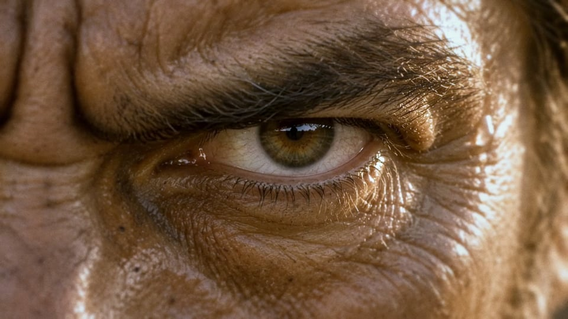
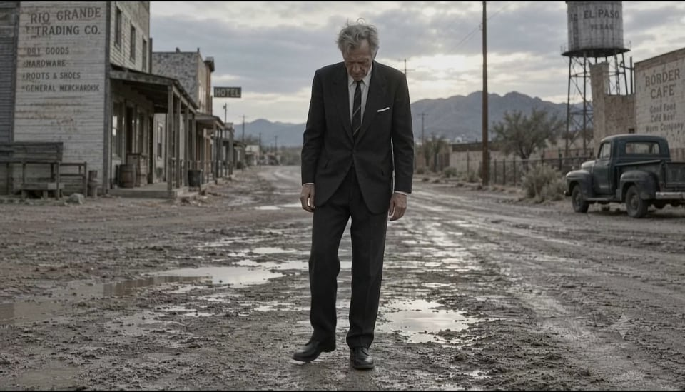
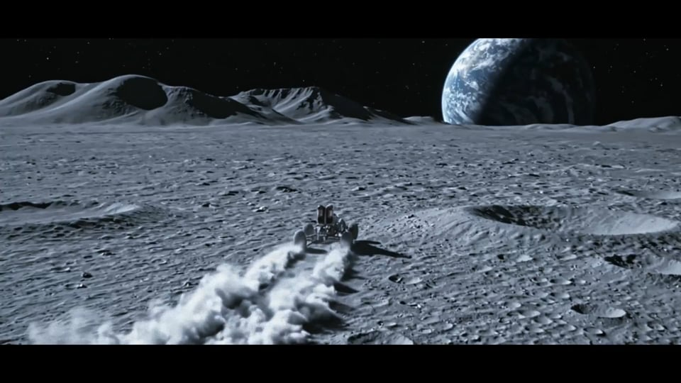
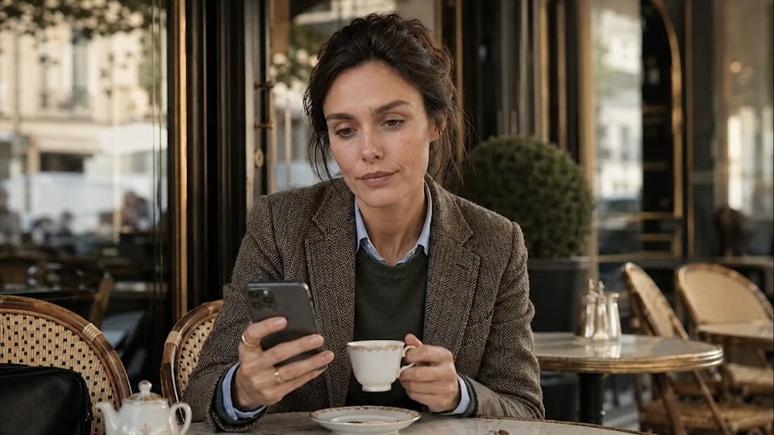
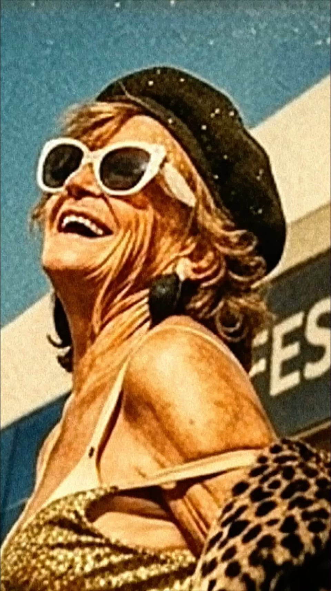
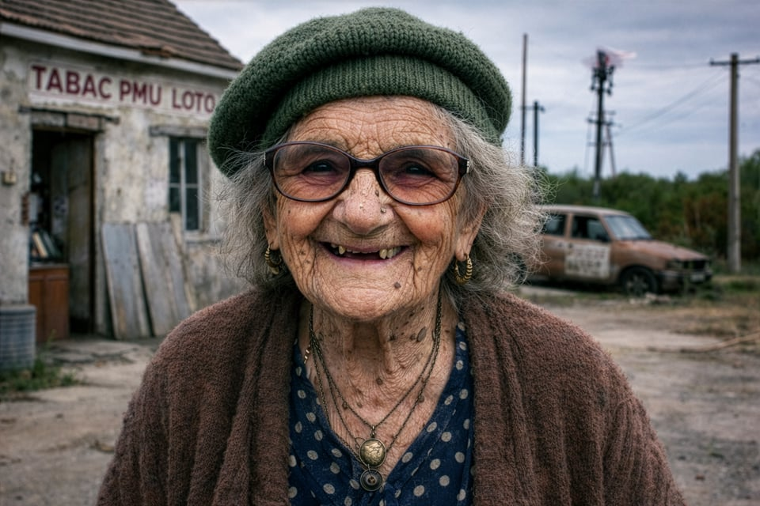

ŒUVRE 01Duel
01
Duel
Fiction · IA générative
Un face-à-face dans un décor de western, où les regards, la tension et les mouvements du combat construisent la scène.

PRÉFACE / UNE DÉMARCHE
Réalisateur depuis plus de vingt-cinq ans, je travaille le cadre, le jeu, la lumière et le rythme. L’intelligence artificielle ouvre un nouvel espace de mise en scène, de fiction et de recherche visuelle.
Ce portfolio rassemble des films, des propositions publicitaires, des créations personnelles et des formes satiriques. Des images à regarder comme des fragments de cinéma.
À propos ↗TABLE DES MATIÈRES / 16 FILMS
CHAPITRE I
Des personnages, des situations, des mondes à habiter.
Fiction · IA générative
Un face-à-face dans un décor de western, où les regards, la tension et les mouvements du combat construisent la scène.

Bande-annonce · Fiction
Une bande-annonce qui s’appuie sur les visages, les regards et les atmosphères pour installer un univers de fiction.

Fiction · IA générative
Une séquence d’action urbaine, avec une voiture propulsée au-dessus de la ville. Un travail sur le mouvement, l’espace et le cadrage.
CHAPITRE II
Le geste, la lumière, le montage. Des formes libres pour explorer d’autres images.

Création · IA générative
Un même mouvement traverse différents personnages, époques et univers. Une recherche sur la continuité du geste et le montage.
Clip · Création personnelle
Un film musical qui interroge, avec ironie, le rapport entre intelligence artificielle, authenticité et émotion humaine.

Film · Direction artistique · IA générative
Un univers visuel où l’imaginaire japonais, les cerisiers en fleurs et le longboard se rencontrent.

Expérimentation · Science-fiction · IA générative
Une recherche visuelle de science-fiction autour d’une moto futuriste et d’un paysage urbain enneigé.
CHAPITRE III
Commandes et propositions indépendantes : l’image de marque par la mise en scène.

Spec film · Publicité · IA générative
Un film publicitaire indépendant autour de l’horlogerie, qui met en valeur la montre, ses matières et sa lumière.

Film publicitaire · Boisson · IA générative
Une boisson transposée dans un univers lunaire : un rover, un astronaute et une canette au cœur de la mise en scène.

Film publicitaire · Boisson · IA générative
Un film publicitaire en format vertical, dans un univers industriel peuplé de personnages masqués, autour de la boisson Truc de Fou.

Film publicitaire · IA générative
Un film publicitaire qui inscrit ses personnages dans un cadre du quotidien, avec une attention portée à la justesse des attitudes et du décor.
Spec film · Publicité · IA générative
Une proposition publicitaire indépendante, en format vertical, qui associe des personnages masqués à un univers industriel.
CHAPITRE IV
La comédie et l’absurde, du quotidien à l’impossible.
Sketch · Groland · Canal+
Un sketch d’environ trois minutes entièrement réalisé en IA générative pour Groland, autour d’un procès et de ses personnages.

Sketch · Groland · Canal+
Un sketch de Groland autour de Cannes, qui joue avec les codes du glamour et une figure de mamie décalée.

Sketch · Groland · Canal+
Deux papys jouent aux cartes dans un univers sous-marin : une situation familière déplacée dans un décor impossible.

Sketch · Groland · Canal+
Un sketch qui place un personnage de mamie au centre d’une situation comique, dans l’univers de Groland.
HORS-CHAMP / CARNETS
Une lecture de quelques photogrammes : composition, lumière, silhouette et construction d’univers.
Ouvrir les carnets ↗CORRESPONDANCE
Collaborations artistiques, films et projets à imaginer.
Entrer en contact ↗